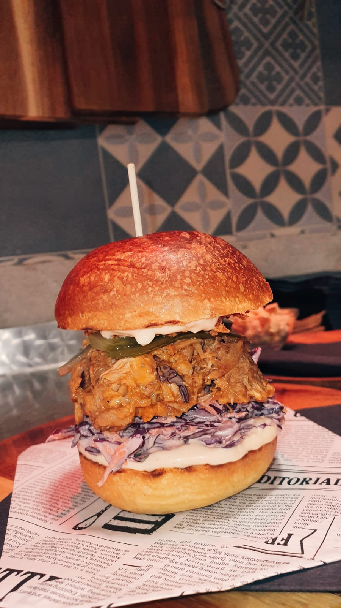
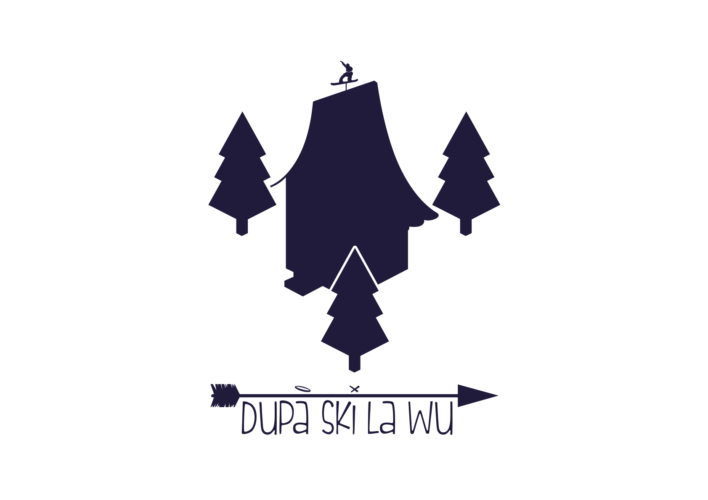
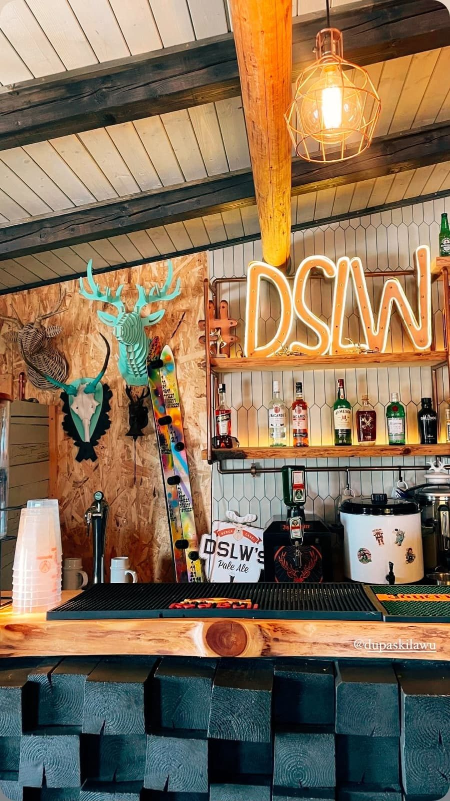
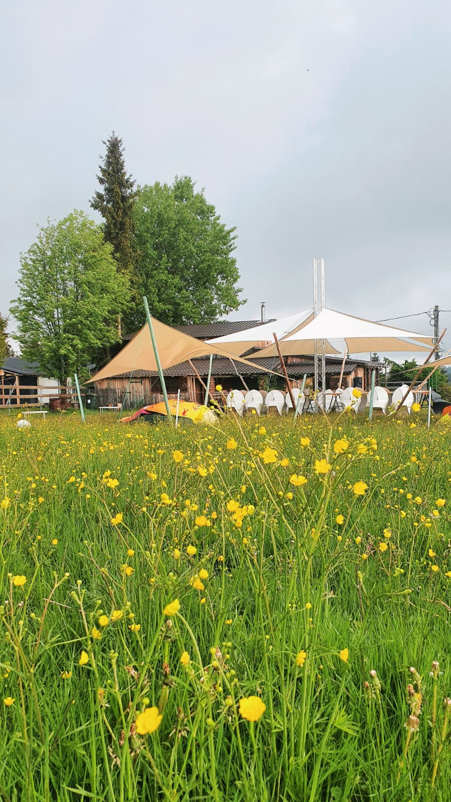
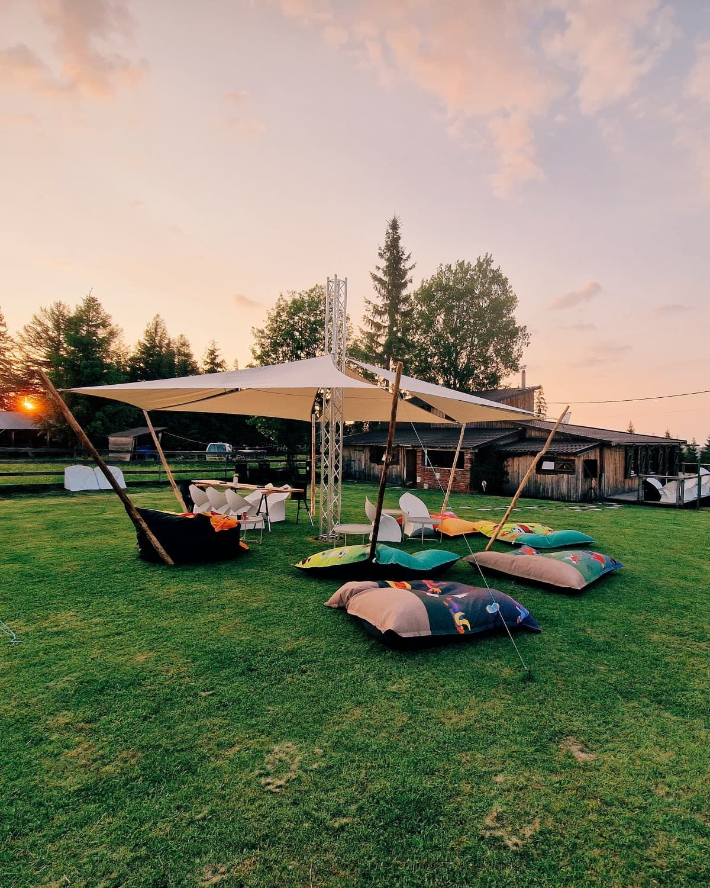

Burgeri serioși
Chiflă rumenă, texturi generoase și combinații potrivite pentru o zi activă la munte.

După Ski la wU Rezervă
Restaurant & après-ski
Preparatele calde, burgerii, băuturile și terasa fac din DSLW un loc bun după pârtie, după traseu sau pentru o zi relaxată la Mărișel.
Rezervă o masă

Those summer days
În sezonul cald, spațiul exterior devine loc de prânz, joacă, socializare și evenimente pentru familii, grupuri și prieteni.